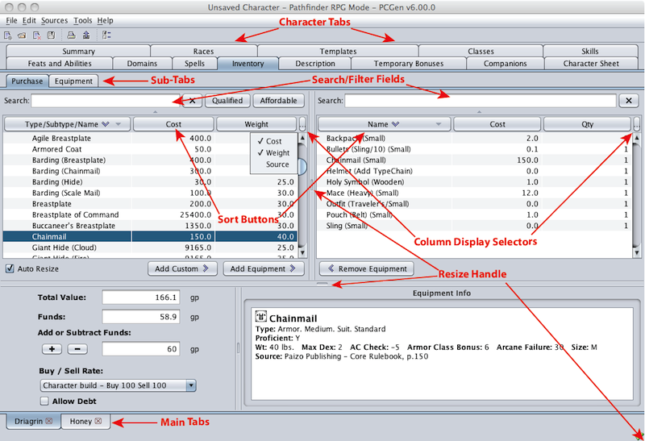

PCGen has a number of different Tab sets to help navigate between the different character creation screens:
Main Tabs:
These allow you to change between the currently loaded
characters.
Character Tabs:
These only appear if a Character's Main tab has been selected. They
allow you to move around and change the character.
Sub Tabs:
When certain Character Tabs are selected, additional sub tabs will
appear that allow further navigation. (i.e. The Inventory tab has
the Purchase and Equipment sub-tabs).
Click on the desired Tab with the mouse and the screen will change to display that section.
Many tabs in PCGen have common interface elements to aid in finding and sorting through the lists.
The Search field allows you to search for items by any text you enter, PCGen will display only those items which have names or types that match the text entered, this is the reason the Kukri is displayed when filtering for the word "dagger", it has the "Dagger" type. If you have applied any other filters by using the Filter tool the text filter will limit its search to those not filtered out by the filter tool. In other words the items displayed will match both the Filter tool and the text Filter.
On the right side of many of the lists column label row is a small icon with three dots in it . When clicked this will produce a pop up menu displaying all the possible columns the list can display with a check mark beside each item currently enabled. Selecting any item will change it's state from either being displayed or hidden.
Most tabs display lists of items, be they equipment, feats, classes, templates, etc., many of which the character being worked will not Qualify for. This generally is caused by the presence of a prerequisite that the character does not meet. These items will appear in red text.